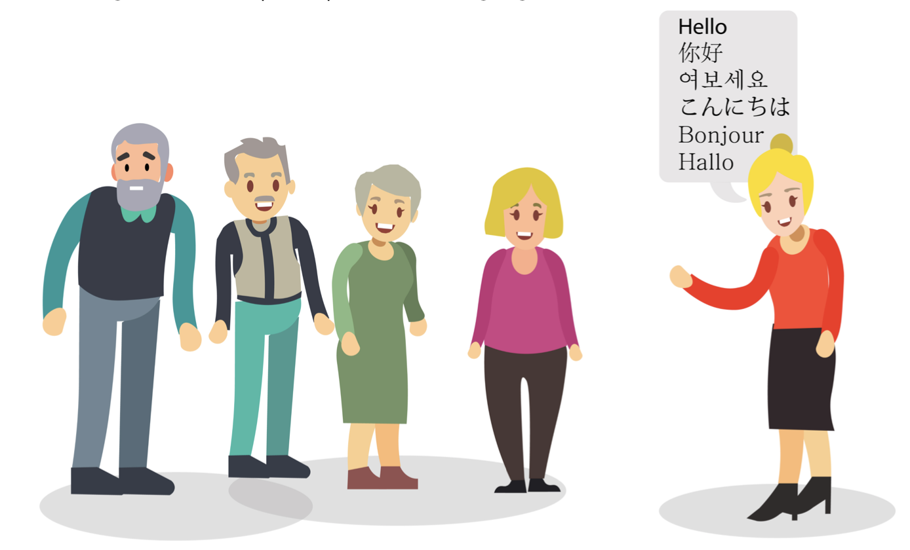
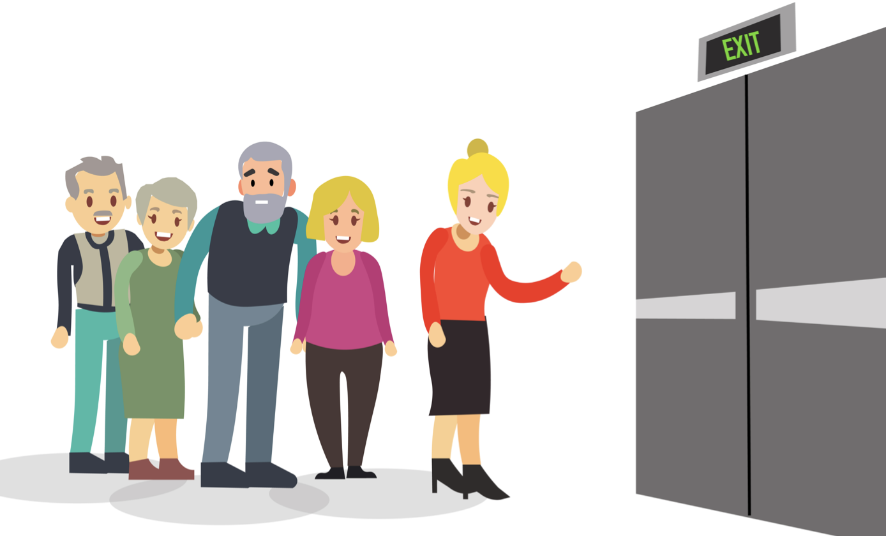
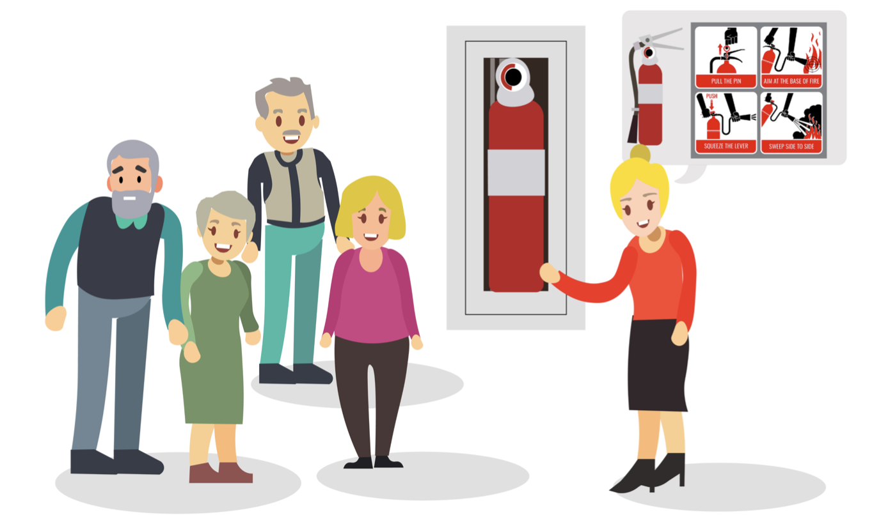
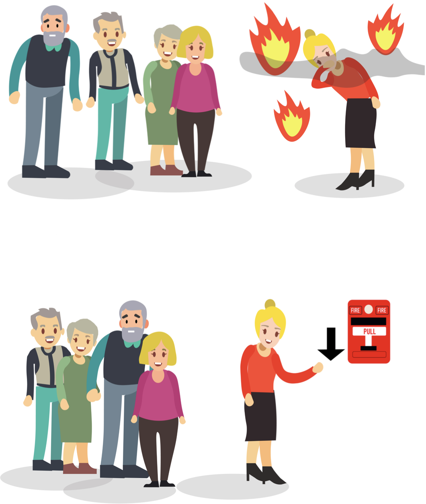
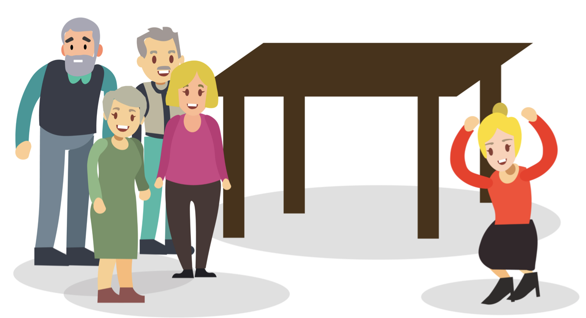
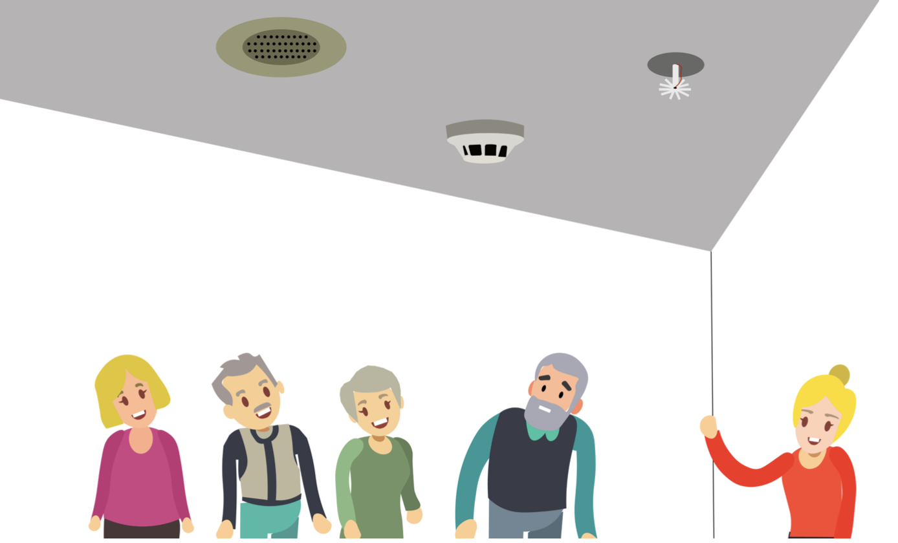
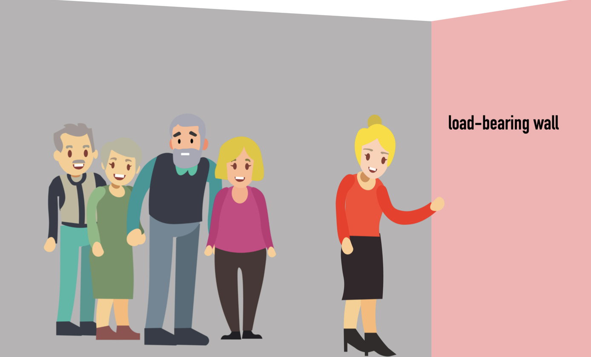
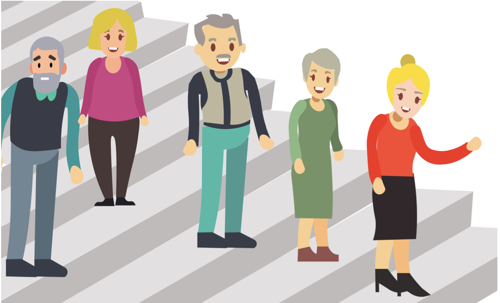

Overview
This upper evel user experience design course gave my 2 teammates and I the chance to help the City of Vancouver better inform the emergency unaware. After finding insights based on the information that we’ve gathered from research and interviews, we designed a tour guide dedicated to new immigrants who have just arrived in Canada with different cultural backgrounds and different languages.
My Roles: User Research / Experience Design / Interface Design
Tools: Figma / Adobe Illustrator / Miro
The Problem
Residents receive emergency alerts telling them what emergency might happen shortly via text messages from the government but are still left on their own to confront a crisis if they are not prepared for the occurrence beforehand.
New immigrants focus on settling down in a new country as their highest priority, but emergencies can happen at any time.
New immigrants that first come to Canada often face language barriers and cultural differences.
weaknesses of the current emergency alert system
The government uses alerting text messages as a method to inform and alert people for emergent situations. According to the government of British Columbia, all wireless service providers are required to participate in the National Public Alerting System and use their long-term evolution networks to distribute emergency alerts since April 6, 2018. However, the emergency alerting system only notifies residents regarding an emergency that is currently happening rather than how to prepare for it. Therefore, residents need to rely on themselves to get prepared. Besides, the emergency guidance information on the government websites look overwhelmed due to poor design, lack of guidance, and redundant information. It is less common for the public to access governmental sources on a regular basis. Therefore, information around the importance of emergency preparedness should be distributed via multiple methods other than just the government’s end.
This becomes a bigger challenge for new immigrants
Canada is a large immigrant country. The majority of new immigrants focus on settling down first and lack awareness of the importance of preparing for emergencies. However, emergency preparedness should be one of the main focuses of newcomers since it can be life-threatening.
Research showed that non-English speaking immigrants find it hard to get informed in an emergencies and may easily panic since they do not understand the meaning of the messages. Different countries have different cultural differences as well, such as different beliefs, different public emergency response rules, different emergency signs with different languages, and more. Immigrants’ behaviors and ways to perceive things are different from Canadians due to their diverse cultural backgrounds and experiences. Thus, it is important to present information about emergency preparedness more understandably and acceptably for people with all cultural backgrounds to increase awareness. New immigrants whose English is their second language might have language barriers that may hinder their access to emergency preparedness materials that are provided in English and French. Besides, the official government website becomes more difficult for new immigrants to understand due to the current problems that already exist on the website. New immigrants' lack of awareness on emergency preparedness and the barriers they encounter regarding language, literacy, and the accessibility to the information make them vulnerable in cases of emergencies. Research showed that in British Columbia, urgent emergency-related information is only broadcasted in English. This leaves many ethnic minorities, who have difficulties with understanding English, susceptible to danger (CRTC, 2019). Besides, unfamiliarity with organizational structures and requirements in the society also hinders immigrants' accessibility to the available resources. This may lead the immigrants stranded and remain unaware of the potential emergencies.
Target Users
We target new immigrants, who are unfamiliar with English and coming from a different cultural background, differently from the mainstream culture of Canada.
The Goal
- to spread the information regarding emergency preparedness broadly to reach more people.
- to present the information efficiently, memorizable, and make them acceptable for people regardless of their cultural background.
-to cover a broader range of immigrant populations and designed in a way that allows immigrants to perceive information more straightforwardly and efficiently.
The oppurtunity: Power of Community Centers
One insight came from the realization that new immigrants like to spend time in nearby community centers where they find people and meet friends who come from the same country. Communities offer all kinds of information about what is happening around the neighborhoods and often host a variety of activities. We think it is a great opportunity to implement our emergency preparedness tour into community activities. Similar to orientation events, before community centers offer their regular events/activities/courses, staff members can walk everybody through the emergency preparedness tour. This makes the tour blend in smoothly with what the community center is hosting, and as immigrants experience the tour in person, the information presented during the tour becomes more solid in their memory.
My Roles and Responsibilities
During the research stage, I started with some broad research on the current weaknesses of the emergency preparedness system, which led to more deeper opportunities. We used the Synthesis Map to sort our research findings into categories and identified clusters, which helped our team feel grounded in the data that we’ve found. After narrowing down our target audience to immigrants, I started doing research related to why immigrants were not aware of emergencies. Later, we were curious about what immigrants were feeling like when they first arrived in Canada. So, I used the Empathy Map to gather some of our immigrants friends’, as long as their family members’ thoughts. Based on some stories from our interviewees, I made personas to help the team relate to our target audiences’ concerns and their goals.
During the solution phase, we all brainstormed a lot of solutions, I used the Evaluation Matrix to categorize them based on value and complexity. This method quickly helped us to land in the direction of a tour guide idea. After detailing some specifics of our solution, I used the Value Proposition Canvas again to check if our tour matches our target audiences.
What does the tour cover?
E-tour focusses on informing participants of the emergency installations and emergency hazards within the buildings. It aims to help them become familiar with the types of emergency equipment and ways to protect themselves during emergencies.
During the tour, the tour guide will be passing by common emergency installations such as emergency exits, emergency kits, fire extinguishers, and others. The tour guide will mention how and when to use these pieces of equipment.
  The tour guide will mention and demonstrate self-protection procedures in different scenarios and encourage participants to ask questions to provoke thinking and enhance memory.
 When the group walks by load-bearing walls, smoke detectors, water sprinklers, and other emergency installations, the tour guide will explain the importance of having these installed at their designated locations and make sure all participants recognize them.
 By the end of the tour, the tour guide takes the participants out of the building through the emergency exits to ensure they have memories of the stairway and know how to escape in case of an evacuation.
Project Constraints
The length of this project only allowed us to come up with a brief sample of what the emergency tour might look like. I acknowledge that there are still a lot of details that need to be considered. Moving forward, I would look into details on how to market this tour and convince relative local institutions to add the tour into their program package.
Project Takeaways
I realized from this project that the amount of research never ends, but it is important to do the right amount of research until I gain enough takeaways about the problem. Listening to what people think and need always gives me valuable insights that help push my ideas forward. Also, different research methods make the design process more fun and help me and my team become more efficient while we discuss.